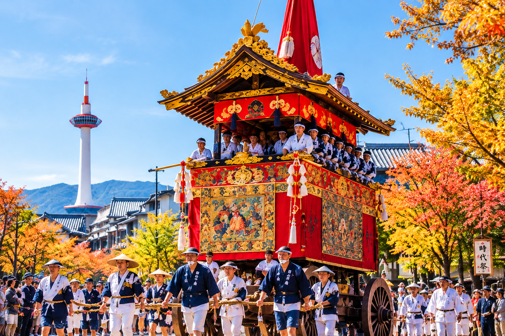
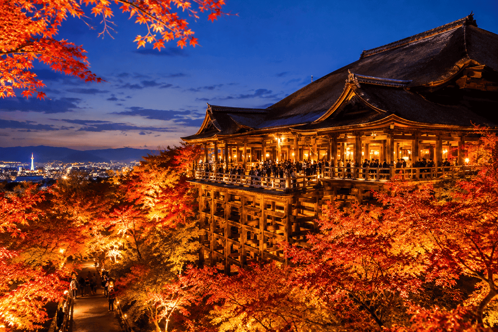
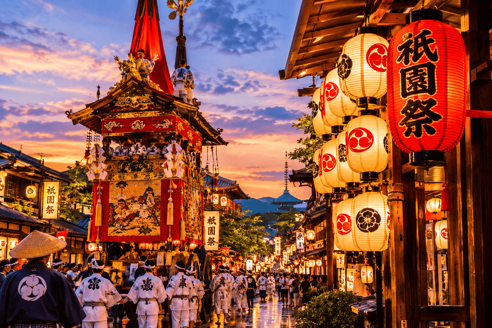

京都の秋のお祭り
伝統と文化にふれる、秋の京都。
時代祭
時代祭は、京都の歴史と文化を感じられるお祭りです。 歴史上のさまざまな時代の衣装を身に着けた人々が、 京都の町を行列で進みます。
華やかな衣装や行列を通して、 京都の長い歴史にふれることができます。

秋のライトアップ
秋には、お寺や庭園などで特別なライトアップが 行われることがあります。
光に照らされた紅葉や歴史ある建物は、 昼間とは違う幻想的な雰囲気を見せてくれます。

祇園祭
祇園祭は、京都で毎年7月に行われる有名なお祭りです。 長い歴史があり、京都の伝統文化を感じることができます。
お祭りの期間には、美しい山鉾（やまほこ）が町を進み、 夜には提灯の明かりが町を彩ります。 多くの観光客が訪れ、京都の夏を楽しみます。
祇園祭は、京都の歴史と伝統を今に伝える大切なお祭りです。

🍁 お出かけ前に確認しよう
お祭りやライトアップは、開催日や時間が 場所によって異なります。
出かける前に公式情報を確認して、 マナーを守りながら京都の秋を楽しみましょう。